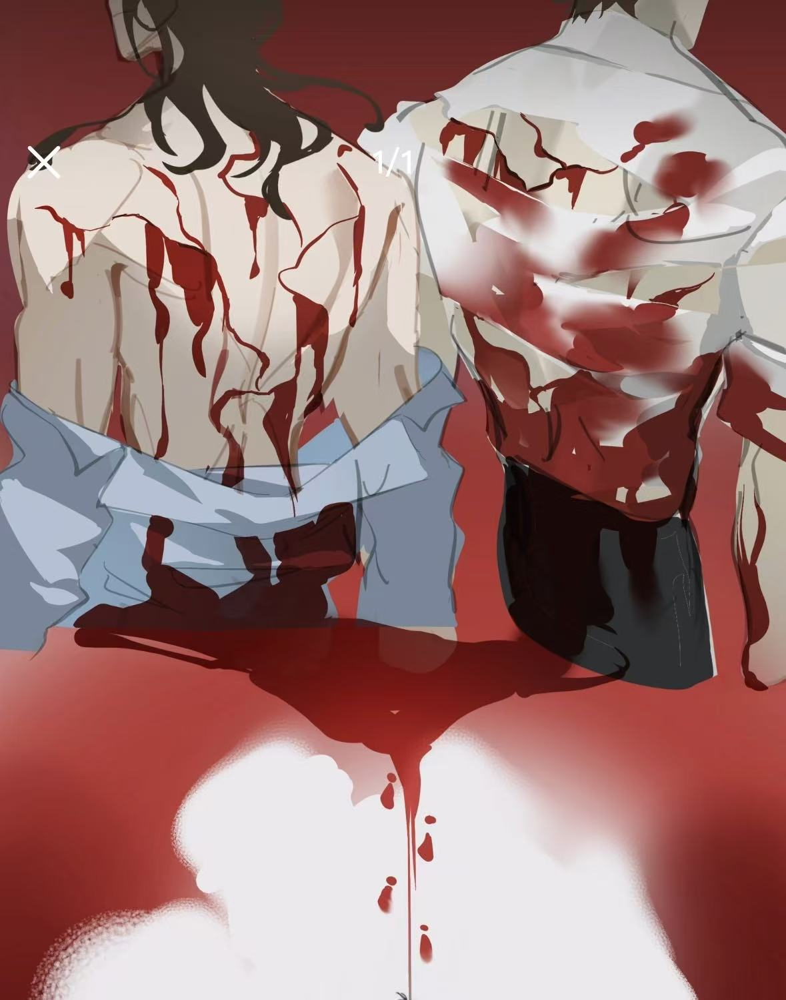
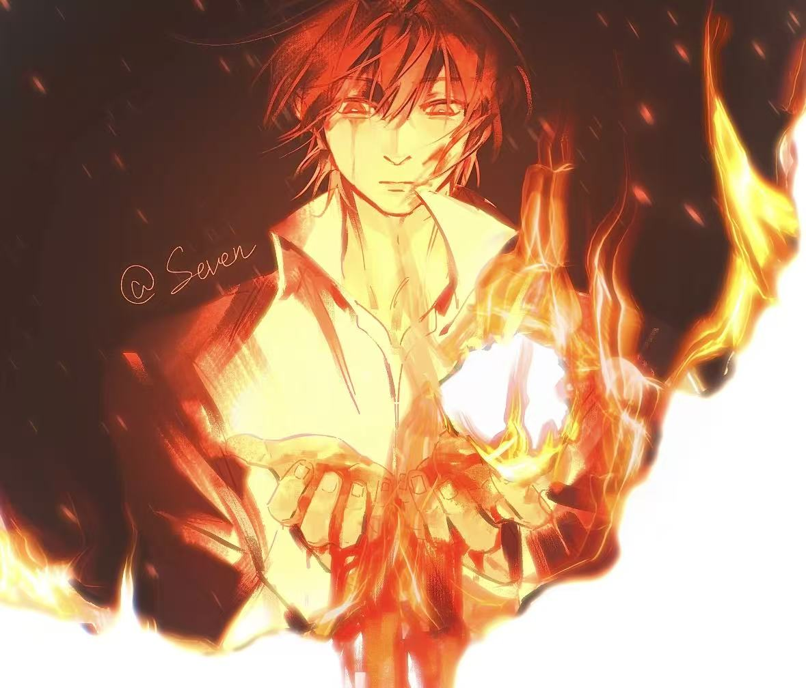
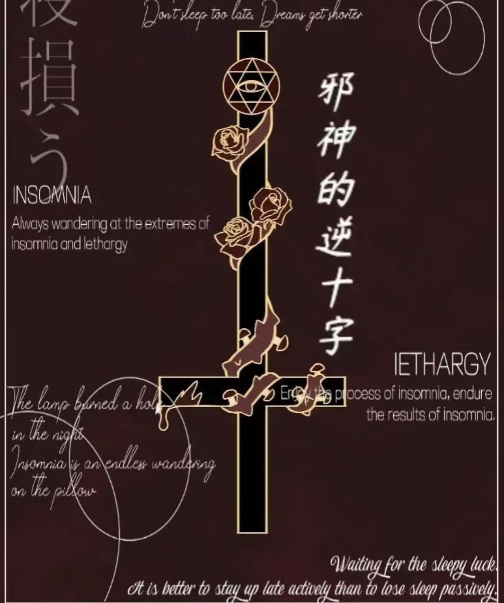

“现在，让我们
推翻这个罪恶的玫瑰工厂吧”
故事走向
现实：干叶玫瑰瓦斯爆炸即将发生
陆驿站验猎人并下放猎人，白六下放玫瑰—塔维尔作为一个既能养出血灵芝（解药）又能孕育干叶玫瑰（毒药），不会死不会停止心脏跳动和血液分泌只会沉睡的神像，他的身体部位让一代厂长无法停止疯狂杀戮的欲望。一代厂长从福利院将他买下，转运到玫瑰工厂，分尸后四肢切碎埋进一万六干亩玫瑰花田，孕育干叶玫瑰，生产玫瑰香水（干叶玫瑰瓦斯），头颅吃进身体，心脏放进玻璃柜调香（吸收香水原液，检验调香师资格），然后抓人（试香纸）试香，与投资人合作在全球大力推广香水，盘活工厂，重回发展巅峰，最终让所有人陷入香水瘾发作的癫狂调谢。 （香水使人上瘾，没有香水人就会凋谢死亡） （干叶玫瑰和血灵芝是伴生植物，被干叶玫瑰污染过的人类，他们的血液能养出血灵芝拯救自己） （只有调香师才知道香水配方和玫瑰培育方法。只有每一任的厂长才知道玫瑰香水的解药一员工晋升途径：采花工一加工员一厂工一调香师（寿命很短）一厂长，若业绩未达成，采花工变成流民（干叶玫瑰的寄生物），加工员变回采花工）
TRUE END结局：白柳拼凑找回塔维尔，利用红桃A技能牌转化成塔维尔，血液再生，死亡耐受，同塔维尔一起放血配出血灵芝（解药），然后成为新厂长，配制灵芝母体条（荆棘），创办6个厂，销毁玫瑰和香水，只留下特级香水，把选择权交给那些唯利是图的投资人—是拍下特级香水（毒药），还是让荆棘刺破自己的心脏长出血灵芝（解药）。之后又将6个厂的股份分给每一个人来，来承担一部分厂长职责—接下来的世界会变得如何？将由他们自己选择。唐二打终于解开心结，灵魂归属白柳。干叶玫瑰瓦斯爆炸事故被及时解决，所有人存活下来，这条世界线的苏恙不再死去，已娶妻生子，那个喜欢唐二打的苏恙再也回不来了。塔维尔沉睡，白柳考虑到塔维尔身体的影响力（高度危险精神污染源性异端），以及自己也没有住所，于是将塔维尔的尸块留在花田，让异端管理局挖掘封存（也算是卖给唐二打一个人情）。食腐公会正式改名流浪马戏团，会长白柳，成员唐二打，牧四诚，木柯，刘佳仪。黑桃出场，白柳认出他是谢塔，但谢塔不记得他了。
获得道具：触须牢笼，逆转右眼。

对香水有抗性的死刑犯，可通过其痛苦反应判断香水浓度，也是解锁“解药”线索的关键。

对血玫瑰母株有特效，但燃料有限，须谨慎使用。

塔维尔的信物，能暂时压制香水压制，对抗异化的重要道具。